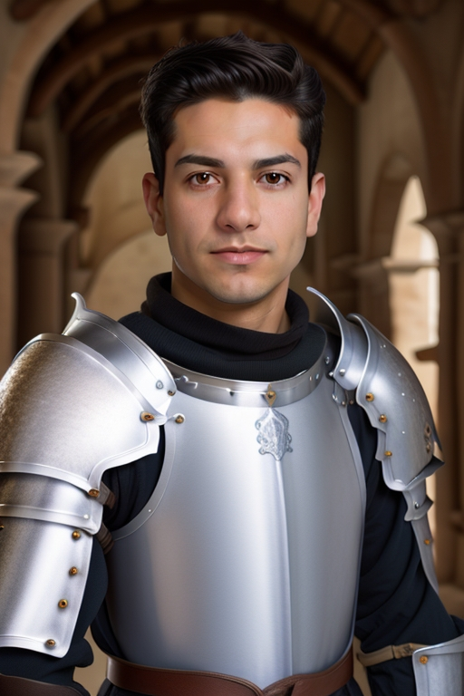
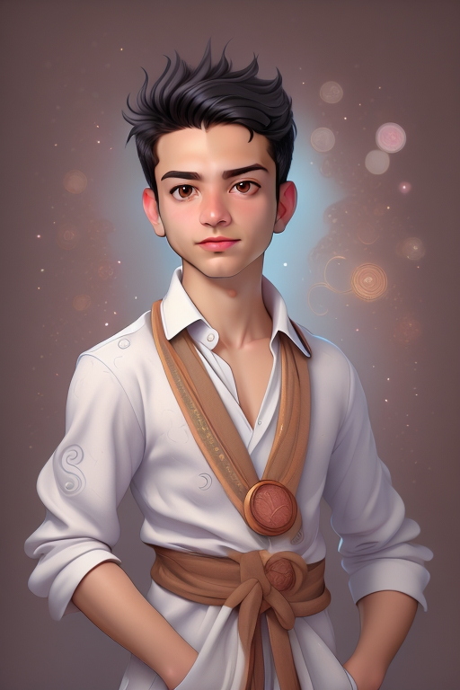
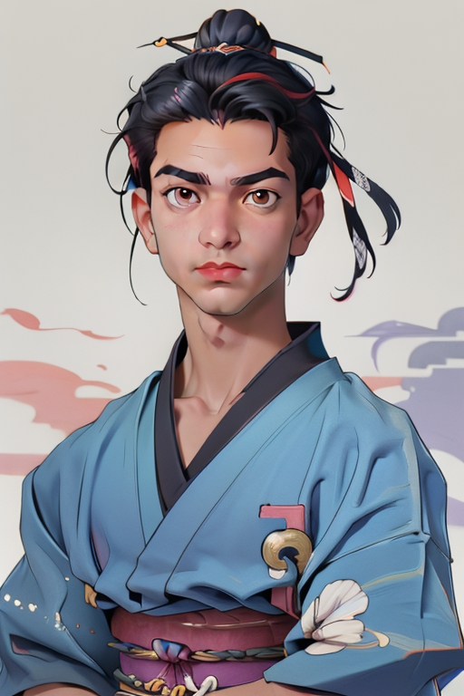

चेहरे की पीढ़ी विशेषता का उपयोग करने के लिए गाइड
AiCasso में चेहरे की पीढ़ी की विशेषता बेहद बहुपरकारी है! यह आपको विभिन्न पात्रों या शैलियों में एक विशिष्ट चेहरे को शामिल करके शानदार छवियाँ बनाने की अनुमति देती है। चाहे आप एक योद्धा, समुराई, या कोई अन्य पात्र की कल्पना कर रहे हों, AiCasso इनपुट चेहरे का उपयोग करके उस चेहरे को अनुरोधित डिज़ाइन में एकीकृत करके एक छवि उत्पन्न करता है।
यह कैसे काम करता है:
इनपुट छवि:
प्रॉम्प्ट 1:
"एक यथार्थवादी योद्धा, अधिकतम स्केल का उपयोग करें"
परिणाम 1:

प्रॉम्प्ट 2:
"चिबी शैली का उपयोग करें और एक समुराई बनाएं, डिफ़ॉल्ट मानों का उपयोग करें"
परिणाम 2:

प्रॉम्प्ट 3:
"एक समुराई, 31 डिनॉइज़िंग स्टेप्स का उपयोग करें, और एनीमे शैली"
परिणाम 3:

वैकल्पिक पैरामीटर
यदि आप अपनी उत्पन्न छवियों में थोड़ा और व्यक्तित्व या नियंत्रण जोड़ना चाहते हैं, तो यहां कुछ विकल्प हैं जिन्हें आप समायोजित कर सकते हैं:
- नकारात्मक प्रॉम्प्ट: यह वह जगह है जहां आप AiCasso को बता सकते हैं कि आप छवि में क्या नहीं देखना चाहते। यदि आप इसे खाली छोड़ देते हैं, तो AiCasso केवल सकारात्मक प्रॉम्प्ट पर ध्यान केंद्रित करेगा।
- डिनॉइज़िंग स्टेप्स की संख्या: यह नियंत्रित करता है कि छवि कितनी चिकनी और परिष्कृत दिखती है। आप 21, 31, या 41 स्टेप्स में से चुन सकते हैं, जिसमें 41 डिफ़ॉल्ट है। अधिक स्टेप्स का मतलब है एक साफ, अधिक परिष्कृत छवि।
- गाइडेंस स्केल: यह छवि को आपके विवरण के प्रति सच्चा रखने में मदद करता है। स्केल 1 से 20 के बीच होता है, जिसमें 10 डिफ़ॉल्ट है। उच्च संख्या का मतलब है कि AiCasso आपके प्रॉम्प्ट के करीब रहेगा।
- S स्केल: यह चेहरे की संरचना के बारे में है। यह थोड़ा तकनीकी है, लेकिन मूल रूप से यह चेहरे की संरचना के वजन को समायोजित करता है। डिफ़ॉल्ट 1.0 है, और आप 0.0 से 2.0 के बीच कहीं भी जा सकते हैं।
- शैली: क्या आप अपनी छवि को एक विशिष्ट वाइब देना चाहते हैं? आप कॉमिक, चिबी, 3D, एनीमे, या यथार्थवादी जैसी शैली चुन सकते हैं। यथार्थवादी डिफ़ॉल्ट है, लेकिन रचनात्मक होने में संकोच न करें!
और याद रखें, AiCasso काफी सहिष्णु है। आपको व्याकरण के जादूगर होने या हर विवरण को सही करने की आवश्यकता नहीं है। बस अपने शब्दों में जो आप चाहते हैं उसका वर्णन करें, और AiCasso बाकी का ध्यान रखेगा। निर्माण का आनंद लें!